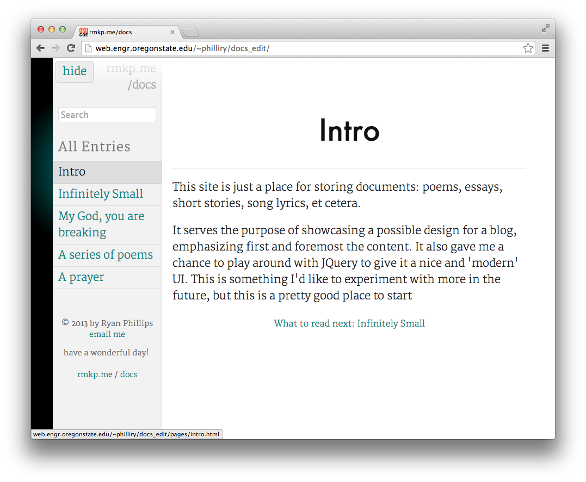

Ryan Phillips
ABOUT
Hi! So let's start with the basics: I just graduated from Oregon State University with a Bachelors in Computer Science. I've always loved the raw act of creation - starting with nothing and then making, writing, coding, and building - in a multitude of mediums. But as for the here and NOW: well, now I'm focused on developing/designing beautiful, user experience-centered software. For the web, for mobile, for anything, for life. I'm looking to be part of a team in which we can collaborate and build something great together.
PROJECTS
Shark Eyes

Shark Eyes was an undergraduate senior design project and a collaboration with the College of Earth, Ocean, and Atmospheric Sciences. The goal of the project was to make Oregon Coast research data available to fishermen via a simple and easy to use web application.
This application was built on a whole stack of technologies including Django, Matplotlib, and the Google Maps API. I designed and coded the front-end and the first draft of the image plotter/tiler for the data layers.
Basic Website Prototypes

|
Picture FeedStatic site generator: turns a folder of images into a series of pages. This was basically just an exercise in piecing together a number of different technologies including watchdog, jinja2, and scss. |
|  |
Basic BlogFor presenting a set of documents. Uses AJAX load, canvas effects, and more. Since GitHub hosting doesn't seem to support AJAX, I've put it up on one of my old Oregon State Servers for now. |

|
Playlist GeneratorThis is a static generator that turns a folder of songs into a website which relies on jQuery for the UI. Each song gets a waveform representation, inspired by the SoundCloud music player. |
Interactive Course Material Prototypes
 |
 |
 |
 |
Video Processing Script

I was tasked with editing/processing hundreds of videos produced for online OSU classes. After doing about a dozen using off the shelf software, I quickly decided that I should come up with a more efficient method. This was originally developed as a script which relied on the audio/video processing libraries sox and ffmpeg to auto detect start/finish and auto crop clips, add titles, compress and normalize audio, and transcode for the web.
Along with that script, I created a basic GUI-based application via Tkinter and PyInstaller which provided most of the same functionality, but in a simple, easy-to-use, cross-platformer package.